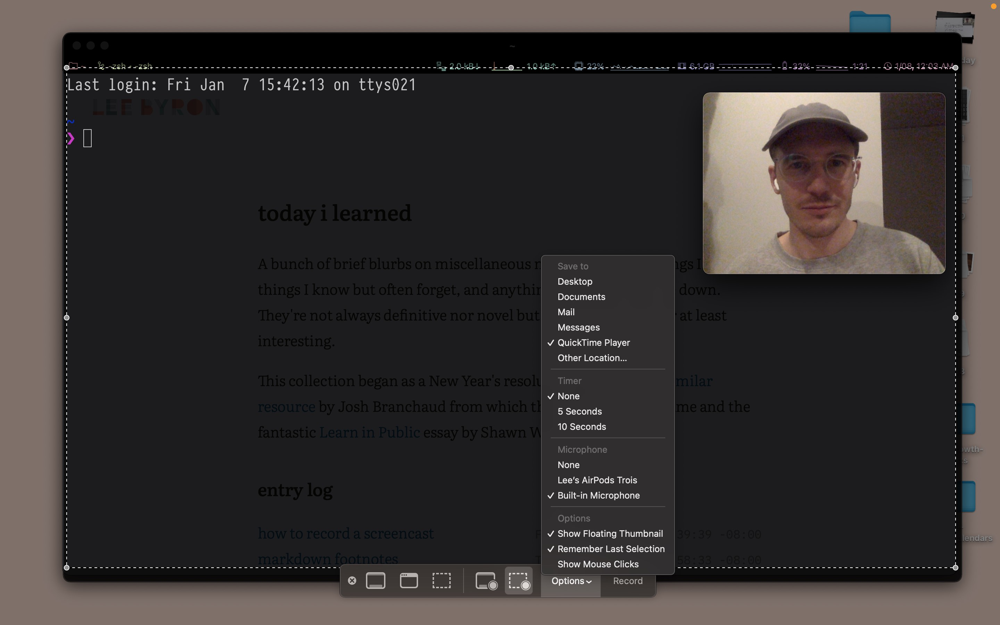

tilsetup a simple screencast
There's plenty of good software out there for screencasting, but if you're in a pinch Quicktime Player does a solid job with a bit of prep.
-
Get a clear desktop and open all windows you want to screencast, not full screened. Also open Quicktime Player.
-
Don't forget to increase font size in any terminals, browsers, or IDEs to increase visibility. 100 columns works okay.
-
-
File → New Movie Recording
Don't actually record a movie. This just abuses the webcam preview so you can have your face in the screen cast. Resize the window down and position it in the corner of your desktop.
-
File → New Screen Recording
-
Choose the "Record Selected Portion" and resize the area to be 1280×720 (or a large size of the same aspect ratio if your screen allows).
-
You can't move windows around while resizing the recording area, but you can during recording. If necessary, start a recording to get windows all lined up.
-
Open options and make sure your microphone is on.
-
Record! Press ⌘⌃esc to stop. Trim the resulting video.
-

I did exactly this to record a screencast about this very tool!